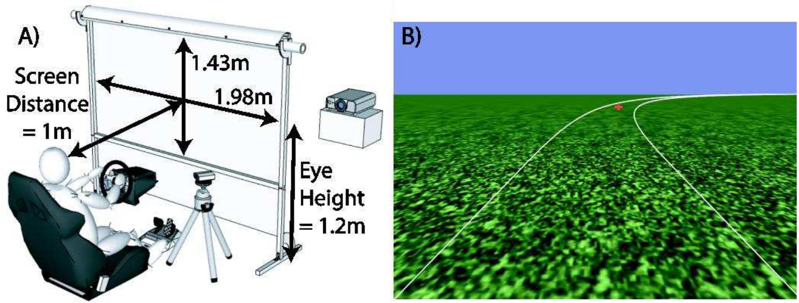
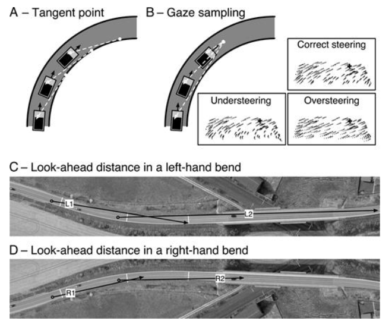
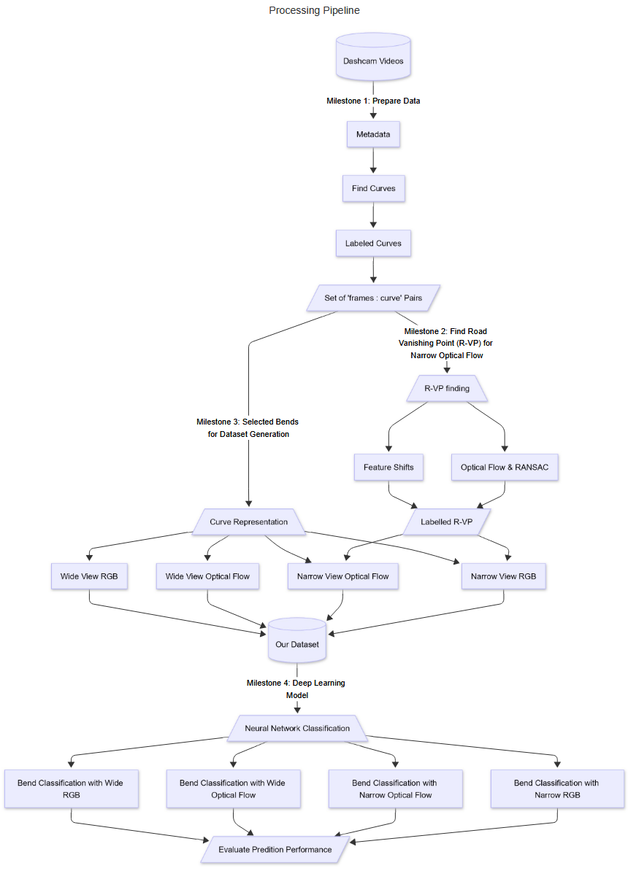
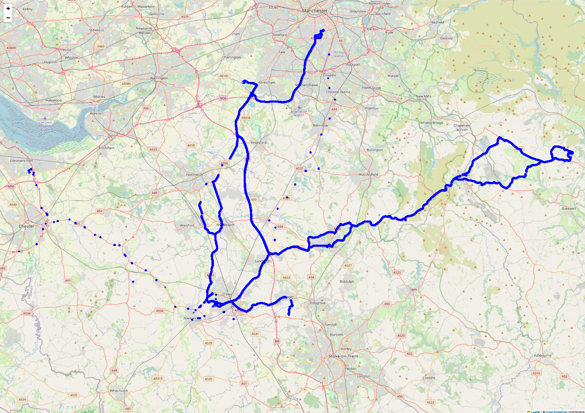
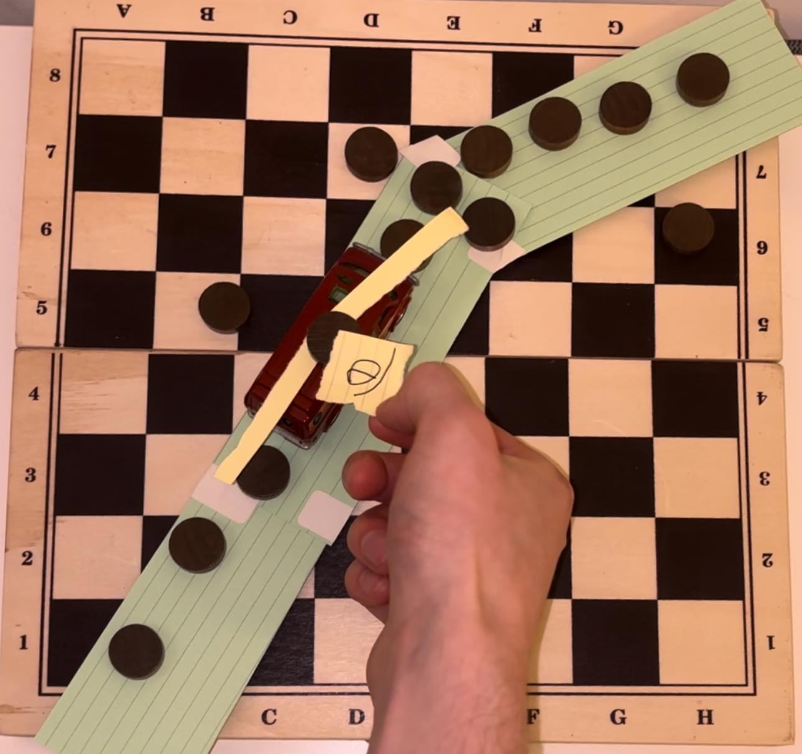
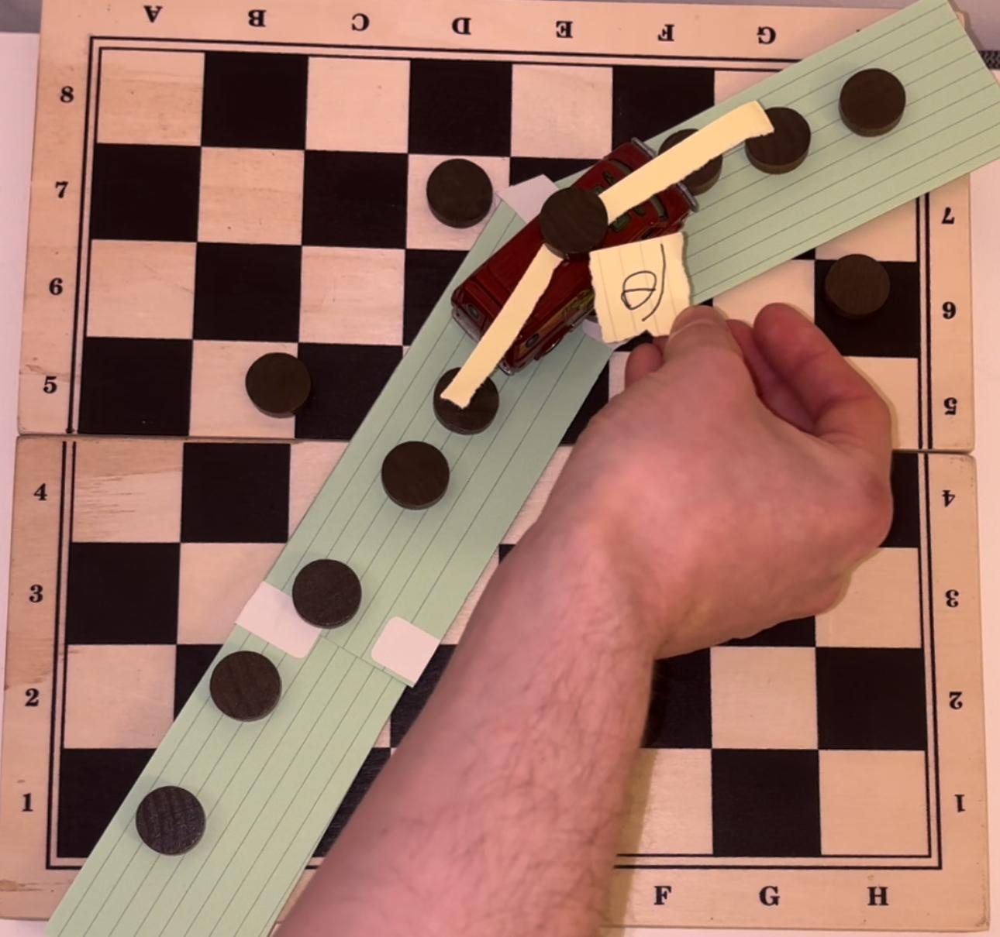
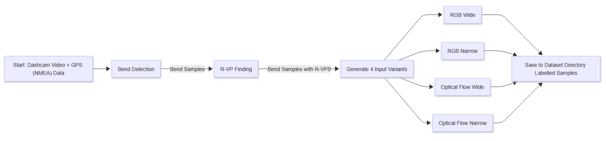
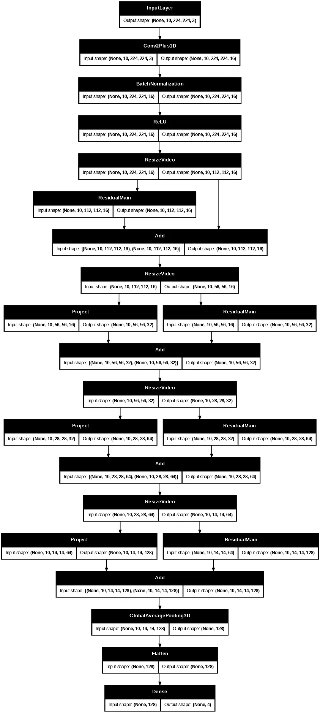
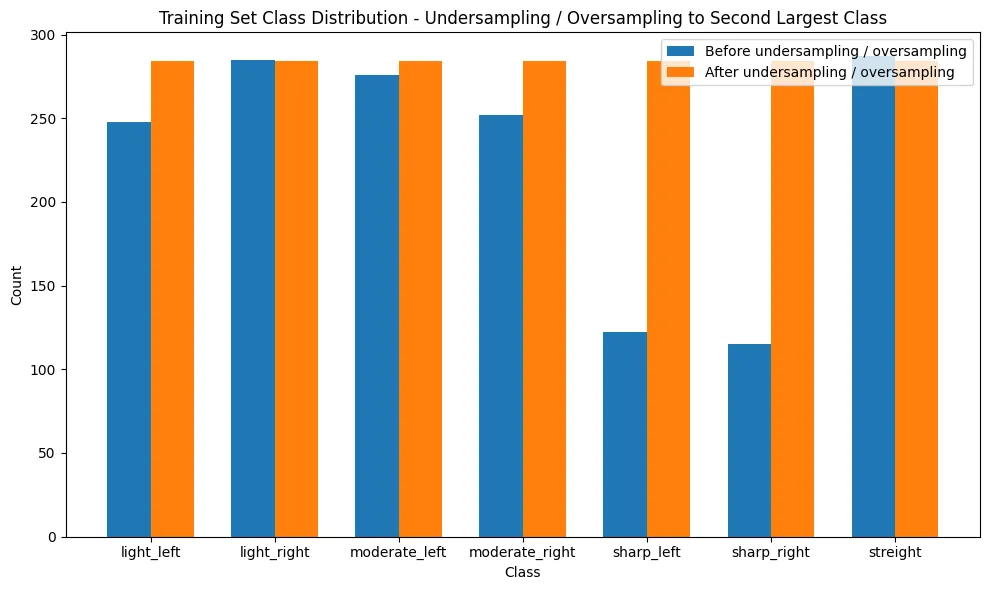

Motivation
Advanced Driver Assistance Systems (ADAS)
Enhance vehicle safety and assist the driver.🦺
Combination of sensors, cameras, and algorithms to monitor the vehicle's surroundings.📊
Help reduce the risk of accidents and improve overall road safety.✅
[9]Road Bend Prediction
Road Bend Prediction:
Observing upcoming bends.🔭
Classifying the direction and severity.📊
Assess Risk -> Alert driver or intervene.📉
Use Case: Fire engine study to reduce rollover 🚒
Simulated complex roads.🗺️
Firefighters Navigated with & without system.🔔
Reported significant reduction in roll-over risk.⬇️
[3]Study: Real World Experiment 🚗
They used GPS and high detailed maps to find upcoming bend.🗺️
Alerted driver with advisory speed.🔔
Reduction in Risk in real-world environment.⬇️
[4]This Bend Classification System
Aims:
Vision only system.📷
Detect and classify upcoming bend direction & sharpness.🛣️
Build the system to handle real-world environments.🌍
Human-Like Judgement
Manipulating Motion Field... Over/Under Steering Source: [5]
Human-Like Judgement
Gaze on R-VP when negotiating bends. Source: [2].
Experiment Hypothesis:
1. Bend classification machine Learning on RGB sequences.
2. Practicality of human-like motion fields for bend classification.
3. Impact of R-VP focused sequences.
Processing Pipeline 🏭
Milestone 1: Prepare Data
Data Collection
 6hr45mins of UK road footage between October 2024 and April 2025 Covering Range of: Seasons, Road types, Speeds, Weather conditions⚠️ Disclaimer: Footage at night was removed.
Stereo Camera
Captured in stereo for future research & development(calibration artifacts publicly available)
NMEA Positioning Data
Positioning data embedded in video: 10Hz sample rate.
$GPRMC,[utc_time],[status],[latitude],[ns_indicator],[longitude],[ew_indicator],[speed_knots],[course_deg],[date_ddmmyy],[mag_var],[mag_var_dir]*[checksum]
$GPGGA,[utc_time],[latitude],[ns_indicator],[longitude],[ew_indicator],[fix_quality],[num_sats],[hdop],[altitude],[alt_unit],[geoid_sep],[geoid_unit],[dgps_age],[dgps_station]*[checksum]
We focus on:
- UTC Time
- Speed (knots)
- N/S and E/W
- Latitude (Degrees Minutes)
- Longitude (Degrees Minutes)
Automatic Bend Labelling
Detect bends in the dataset.🔍
Label them with severity and speed.🏷️
Clip 10, 20, 30, 40, 50, 75, 100 metres before bend.📏
Distance based heading change
Distance based heading change
Detect start and end.

Detect start and end.

Detect start and end.

Detect start and end.

Detect start and end.

Return samples
| Bend | avg. Angle | avg. Speed | Start Frame | 10 Metre Frame | 20 Metre Frame | 30 Metre Frame | 40 Metre Frame | 50 Metre Frame | 75 Metre Frame | 100 Metre Frame |
| 1 | 10.63 | 30.16 | 1945 | 1924 | 1900 | 1882 | 1861 | 1843 | -1 | -1 |
| 2 | -22.31 | 22.13 | 2754 | 2733 | 2709 | 2688 | 2664 | 2646 | 2595 | -1 |
| 3 | 8.93 | 30.1 | 3221 | 3200 | 3179 | 3155 | 3137 | 3116 | 3065 | 3011 |
| 4 | -8.57 | 27.76 | 3419 | 3398 | 3377 | 3356 | 3338 | 3317 | 3266 | -1 |
Automatic Bend Labelling
Evaluation
➕ Observed high accuracy.
➕ Constant labelling (no human bias).
➖ No filter of false bends: Roundabouts or Junctions.
➖ Relies on quality of NMEA data.
➖ Affected by noise in slow moving traffic.
Milestone 2: Find Road Vanishing Point (R-VP)
Road Vanishing Point (R-VP) Estimation
Challenges Of Understanding Driving Scenes
Ego-motion
Occlusion
Structured and Unstructured
Other Factors
Illumination/ Glare
Weather
...
Road Vanishing Point (R-VP) Estimation
Goal
Estimate the R-VP of the road.🔍
Establish understand the scene.🛣️
Solution 1:Perspective Shift Estimation
Solution 1:Perspective Shift Estimation
Notice high sensitivity to ego-motion.
Evaluation 1:Perspective Shift Estimation
➕ Speed and Efficiency!
➕ Moderately good approximation.
➖ Highly sensitive to Ego-Motion.
➖ Highly sensitive to feature quality.
Solution 2:Optic Flow with RANSAC
Evaluation 2:Optic Flow with RANSAC
➕ Robust against moderate Ego-motion.
➕ Higher stability.
➕ Filter other vehicles.
➖ Difficulty finding global parameters.
➖ Computation cost.
Milestone 3: Dataset Generation
Generation Pipeline
Generation Time
29783m 49s (20.68 days)
Generation Time
29783m 49s (20.68 days)
⬇️ Optimisations + Parnell Processing
2644m 18s (40.56 hours)
Input variants generated
Generated samples of each input variant
Generated samples of each input variant
Milestone 4: Deep Learning Classification Models
Train and compare models on these four input variants.
Evaluation metrics
Accuracy
Class level: Precision, Recall, F1
Weighted F1-Score
Confusion Matrix
(2+1)D Video Classification Design
 [7]Design Summary
(2+1)D Convolutional neural network (CNN).
Capture spatial and temporal patterns.
Take advantage of hierarchical features.
Multi-Layers generalise by producing abstract feature patterns.
Final class prediction outputted as a dense vector.
[1, 7]What is (2+1)D convolution?
Approximates 3D convolution.
Separates spatial (2D) and temporal (1D) componets.
Less weights to train.
[1, 7]Model Performance
We split the dataset into 3 sets:
- 70% Training set
- 20% Validation set
- 10% Test set
Test set is used to evaluate the model's performance on unseen data.
Wide View Datasets
Narrow View Datasets

Overall
| Model | Accuracy | Loss | Weighted F1-score (f1) |
|---|---|---|---|
| Wide RGB Model (7-class) | 73.78% | 0.8675 | 0.7399 |
| Wide Optical Flow Model (7-class) | 55.55% | 1.1519 | 0.5568 |
| Narrow RGB Model (4-class) | 43.27% | 1.1907 | 0.4480 |
| Narrow Optical Flow Model (4-class) | 50.96% | 1.2072 | 0.4783 |
Evaluated and Discussed the Proposed Hypothesis.🔍
Hypothesis 1:
Is machine learning effective for bend direction and severity classification?➕ Yes, we can classify bends with high accuracy. (73.78% for RGB Wide)
➖ However, requires more data to be robust.
Hypothesis 2:
Do motion fields provide a strong input representation (for human-like judgement)?➕ Wide Optical Flow showed generalisation (55.55% Accuracy)
➕ Strong class boundaries for bend direction.
➖ High confusion for bend severity.
➖ RGB outperforms motion field.
Hypothesis 3:
Will focus around the R-VP, inspired by human-like gaze, improve classification?➕ Narrow View Optical Flow performed marginally better than Narrow View RGB.
➖ High confusion and poor generalisation.
➖ Limited by quality of R-VP estimation.
➖ Limited dataset due to hardware limitations.
Limitations ⬇️
High computational cost.
No Real-time.
Ego-morton introduces additional challenges.
Occlusion of road features.
Separation of bends from junctions and roundabouts.
Adaptability to high noise (such as window wipers).
Achievements 🥅
End-To-End Pipeline 🏭
Automatic bend labelling
Road Vanishing Point (R-VP) estimation
Dense Optical Flow - Motion fields
Dataset generation
Deep Learning Classification Models
Produced Open Source Dataset💾
For comparing 4 different input variants.
Publicly available for future development.
Release raw dash cam and NMEA records
Countered real-world application challenges🛣️.
Various road conditions and illumination.
Handle Unstructured and structured environments.
Filter bias by masking other vehicles.
Reduces Effects of ego-motion.
Interpreted bends from noisy GPS data.
Future Work
Incorporate additional sensors to counter ego-motion [8]
Use Depth Maps Through Stereo Vision
Explore Advanced DNN Architectures Further
Bibliography
[1]D. Tran, H. Wang, L. Torresani, J. Ray, Yann LeCun, and Manohar Paluri, “A closer look at spatiotemporal convolutions for action recognition,” 2018. https://arxiv.org/abs/1711.11248
[2]F. I. Kandil, A. Rotter, and M. Lappe, “Car drivers attend to different gaze targets when negotiating closed vs. open bends,” Journal of Vision, vol. 10, Art. no. 4, Apr. 2010, doi: https://doi.org/10.1167/10.4.24.
[3]P. Simeonov et al., “Evaluation of advanced curve speed warning system to prevent fire truck rollover crashes,” Journal of safety research, vol. 83, pp. 388–399, 2022..
[4]S. Chowdhury, M. Faizan, and H. M. Imran, “Advanced curve speed warning system using standard GPS technology and road-level mapping information.,” 2020, pp. 464–472.
[5]C. D. Mole, G. Kountouriotis, J. Billington, and R. M. Wilkie, “Optic flow speed modulates guidance level control: New insights into two-level steering.,” Journal of experimental psychology: human perception and performance, vol. 42, Art. no. 11, 2016.
[6]S. Raviteja and R. Shanmughasundaram, “Advanced driver assitance system (ADAS),” 2018, pp. 737–740. doi: https://doi.org/10.1109/ICCONS.2018.8663146.
[7]TensorFlow, “Video classification with a 3D convolutional neural network.”
[8]B. Guan, Q. Yu, and F. Fraundorfer, “Minimal solutions for the rotational alignment of IMU-camera systems using homography constraints,” Computer vision and image understanding, vol. 170, pp. 79–91, 2018.
[9]Jumaa, Bassim Abdulbaqi, A. A. Mousa, and A. A. Mousa, “Advanced driver assistance system (ADAS): A review of systems and technologies,” International Journal of Advanced Research in Computer Engineering & Technology (IJARCET), vol. 8, Art. no. 6, 2019.
Links
| Resource | Link |
|---|---|
| Final Dataset | UK-Road-Bend-Classification |
| Trained Models | RGB & Optical Flow Models |
| Raw Dashcam Videos | UK-Road-DashCam |
| Component Testing Dataset | Stereo-Road-Curvature-Dashcam |
| Source Code | GitHub Repo |
| Calibration Files | Camera Calibration |